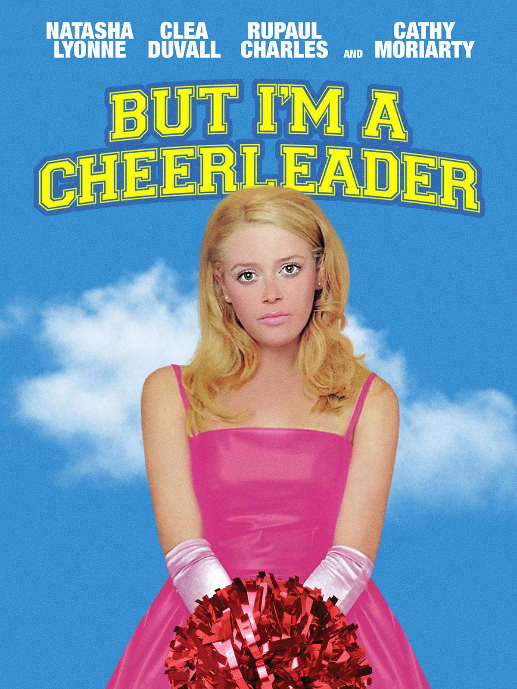

But I’m a Cheerleader
10/10
Now this is how you create a film. *Chef’s kiss.* This movie is everything and more that I want. I wish I had seen this when I was 16, because it would have made things a lot easier for me.
Now this is how you create a film. *Chef’s kiss.* This movie is everything and more that I want. I wish I had seen this when I was 16, because it would have made things a lot easier for me.